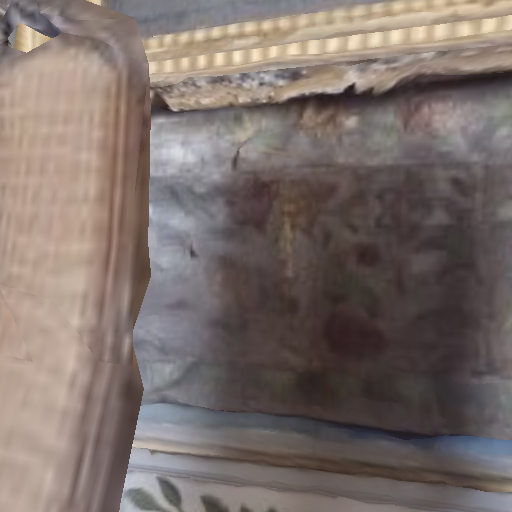

实验 4-1：修改 RGB 分辨率
修改 rgb_sensor 的宽度和高度，观察观测张量 shape 和内存占用的变化。
📐 实验设置
对比 128×128、256×256、512×512 三种分辨率下 RGB 和 Depth 观测的变化。
# 修改配置的核心代码
with habitat.config.read_write(cfg):
cfg.habitat.simulator.agents.main_agent.sim_sensors.rgb_sensor.width = 128
cfg.habitat.simulator.agents.main_agent.sim_sensors.rgb_sensor.height = 128
cfg.habitat.simulator.agents.main_agent.sim_sensors.depth_sensor.width = 128
cfg.habitat.simulator.agents.main_agent.sim_sensors.depth_sensor.height = 128
📊 运行结果：
128x128: rgb=(128, 128, 3), depth=(128, 128, 1), memory≈48 KB
256x256: rgb=(256, 256, 3), depth=(256, 256, 1), memory≈192 KB
512x512: rgb=(512, 512, 3), depth=(512, 512, 1), memory≈768 KB
📸 实际截图对比
128×128 — 48 KB

256×256 — 192 KB (默认)

512×512 — 768 KB
💡
关键发现：分辨率每翻倍（128→256→512），RGB 内存占用变为 4 倍（宽×高×3通道）。
深度图为 1 通道，占用为 RGB 的 1/3。工程权衡：高分辨率提供更清晰视觉，但显著增加 GPU 显存和 I/O 开销。
训练时常用 128×128 或 256×256 以平衡精度与效率。